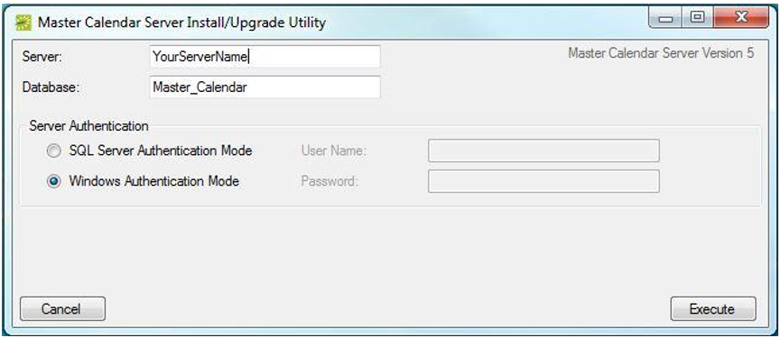
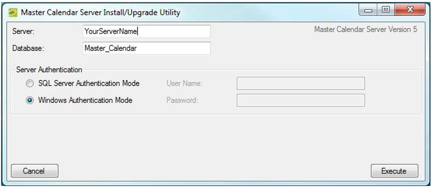

To install Master Calendar, you will:
Note: Be sure to run a backup prior to upgrading your database. It is recommended to upgrade your Master Calendar Database in a test environment prior to upgrading a production database.
To install the Master Calendar Database on the database server, do the following:
